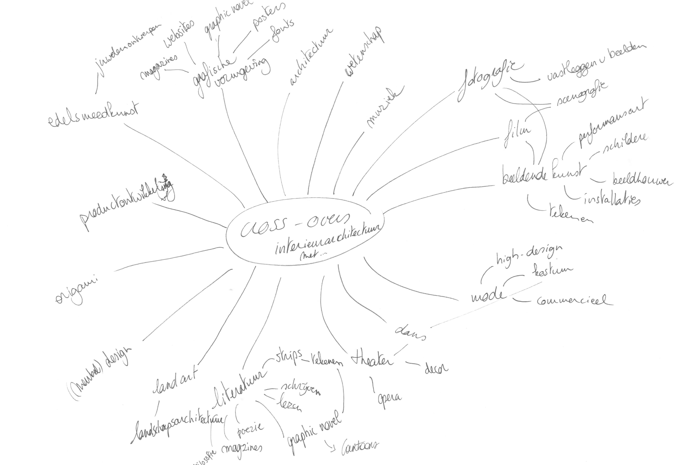
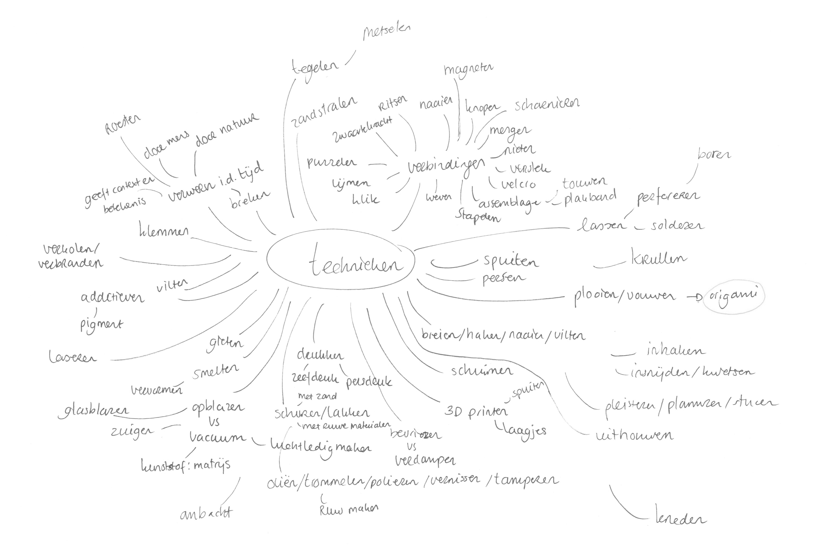

cross-overs

technieken

object

Bij deze brainstorms wouden we nog alle opties openhouden. We schreven alles op wat in ons opkawam zodat we zeker niets zouden uitsluiten. Nu we al die opties hadden opgeschreven gingen we beetje bij beetje de grenzen vastleggen om onze vrijheid steeds meer en meer te beperken. Zo hebben we gekeken wat voor ons belangrijk was aan het object. Begrippen als maatschappij, context, autonoom, niet-functioneel, betekenis en interpretatie zouden een eerste richting geven aan het doel van ons object. We wouden een object dat autonoom is en dus onafhankelijk van de ruimte waarin het staat. Daarbij zou het geen gebruiksfunctie moeten hebben, maar eerder een thema aanrijken dat de toeschouwer aanzet om over dat thema na te denken en daar een eigen interpretatie over te vormen. Dit thema zou een maatschappelijk thema kunnen zijn.
Nu we een idee van het object in ons hoofd hadden werd het tijd om dit thema te bepalen. Na een hele dag filosoferen zijn we gekomen tot een thema waarin de relatie tussen het indivu en de maatschappij centraal staat. Omdat het begrip maatschappij nogal gedefinieerd is en dus niet zo ruim geïnterpreteerd kan worden als wij zouden willen, hebben we besloten om het woord 'maatschappij' te vervangen met 'het collectief'. Dit begrip is veel ruimer en dus op verschillende schalen interpreteerbaar. Om dit thema vorm te geven zijn we begonnen met elk onze interpretatie van de onderlinge relatie tussen het individu en het collectief op een schematische wijze te visualiseren.
Hier zien we het individu met een netwerk rond, de verhouding van het individu tegenover het collectief dat zoals een cirkel wordt weergegeven of zoals een schijf. Een balk dat het collectief en het individu representeerd, waarbij het individu op dezelfde lijn ligt. En links onderaan worden mensen weergegeven als staafjes die naast elkaar staan. Het ene staafje is groter dan het andere en het ene staat hoger dan de andere. Dit om weer te geven dat elk individu anders is en dat die onderlinge relaties verschillen.
De verhouding tussen het individu en het collectief wordt hier weergegeven via een kubus die in een kubus past of een stip in of naast een kubus. Ook de kubus die rond de paal zit en deze net niet raakt geeft de relatie weer.
Ook hier wordt de verhouding weergegeven als een stip of een lijn tegenover een rechthoek, vierkant of een driehoek. Het netwerk komt hier ook terug.
Hier wordt de verhouding tussen het individu en het collectief ook weergegeven als een stip tegenover een cirkel. Verder wordt er ook veel aandacht besteed aan de spanning, De afhankelijkheid of juist onafhankelijkheid, de misbaarheid of de onmisbaarheid van het individu tegenover het collectief. Afhankelijk van hoe groot of hoe klein de groep mensen is wordt een individu wel of niet opgemerkt of gemist.
Hieruit konden we een aantal gemeenschappelijke elementen halen zoals een bepaalde spanning, het feit dat het individu op dezelfde hoogte zit als het collectief, dat het individu deel uit maakt van een netwerk, De interactie tussen individu en collectief en de afhankelijkheid of juist onafhankelijkheid. Deze elementen hebben ons geïnspireerd om een ontwerp te maken waarbij verschillende staafjes via een netwerk opgehangen zijn aan een draagstructuur. Deze staafjes staan allemaal op dezelfde hoogte. Tussen al deze staafjes is er één staafje anders, die het individu representeert. De bedoeling is dat de staafjes op ooghoogte komen en dat je tussen de andere staafjes door, afhankelijk van welk standpunt je inneemt, het individu kan zien. De staafjes staan in het centrum dichter bij elkaar en dijnen uit. We hebben de verhouding van de draagstructuur, die bestaat uit de ribben van een kubus, opgemeten door tape op de grond te plakken en er personen naast te leggen. Ook hebben we de ooghoogtes van personen met verschillende gestalten opgemeten en zo bepaald hoe hoog de staafjes zouden moeten zijn.